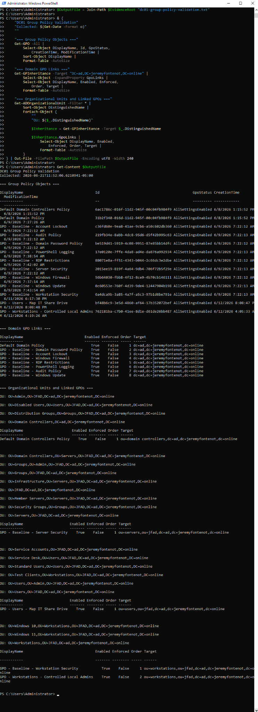

Repository-local evidence chain
Each supported claim resolves to a source file or control file that can be inspected from this repository.
Authoritative proof index
This proof index groups repository-local Microsoft 365 / Entra and on-premises home lab evidence by reviewer question. Status labels distinguish validated, command-verified, screenshot-supported, sanitized, partial, and outstanding claims.
Reviewer ground rules
It proves that public Microsoft 365 and Entra claims are routed to repository-local evidence files, including CSV exports, JSON exports, screenshots, transcripts, proof inventory records, and hash records.
Each supported claim resolves to a source file or control file that can be inspected from this repository.
External organization administration is not claimed. Production impact metrics are not claimed. Current live telemetry is not claimed. Public claims stop where repository proof stops.
Use the links below to inspect the export, screenshot, proof inventory, or hash record behind a public statement.
Relationship chain
Tenant, identity, security policy, application, license, activity, device, admin center, and integrity records.
Each card links to the exact CSV, JSON, PNG, transcript, manifest, proof map, or hash record.
Limitation language separates review evidence from unsupported production, client, or endpoint-fleet claims.
Validated June 21, 2026
This personal nonproduction lab is validated with command output, curated screenshots, safe configuration summaries, backup inventories, archive hashes, and the APA-formatted Word document. Collection and validation occurred on June 21, 2026.
What this proves: the published Word artifact is the supplied Office Open XML document, is 1,400,031 bytes, and has SHA-256 03a605517e2a6ebeb805b7e0f74bd1ec06c664debbdb39b99e09aecc62e4845a.
What this proves: Proxmox host and bridge state, dedicated backup storage, DC01 as the global catalog and five-role FSMO holder, AD-integrated DNS, the active DHCP scope and options, and domain/OU-linked Group Policy inventory.
What this proves: Ubuntu Server 26.04 LTS, static lab addressing, forward/reverse DNS, realmd membership, domain-user resolution, enabled and active SSSD, a valid Kerberos TGT, active SSH and UFW, the subnet-scoped SSH rule, delegated sudo, and active QEMU guest agent.
What this proves: retained snapshot listings exist for VMs 100, 200, 300, and 400, and the enabled Sunday 02:00 backup job includes all four VMs. Snapshot presence is not represented as an independent backup, and archive presence is not represented as a successful restore.
What this proves: the Linux01 evidence archive was packaged and transferred with SCP; its hash matched 5c1eff369a0055338808a93c025847cc5997db4f04614a56ede33b43f9e9b8db. The complete archive matched e8a5a40a6960557383ccb152af2da71053e50382d8287d632b9ed5ad85cb7060.
The lab is personal and nonproduction. Backup archive presence does not prove an application-level restore. Snapshots are not independent backups. The firewall source-restriction intent was not independently tested for exclusivity. DC01 is the only domain controller.



Microsoft 365 / Entra evidence
What this validates: Inventory, hash records, export manifest, live proof summary, and site proof map control how public claims map back to source files.
What this validates: Tenant ID, organization display name, tenant account, verified domains, subscribed SKU records, and Microsoft 365 admin center access screenshots.
Validates user/license state, group inventory, 19 group membership rows, directory roles, and role assignment review.
Validates exported Conditional Access policy records, named location records, authentication-method policy data, authorization policy data, and security-defaults state.
Validates the SG-Block-Legacy-Auth security group and membership export used for access-control targeting review.
Validates app registration, service-principal, and OAuth grant review. These files support application governance awareness within the documented personal tenant scope.
Validates sign-in visibility, directory audit visibility, Entra device inventory, Microsoft 365 admin center navigation, Exchange admin center group review, and Exchange Online PowerShell connection-attempt documentation.
The evidence supports device inventory review and an Intune managed-device validation attempt with documented access, licensing, or API-scope constraints.
{kind=link}
{kind=link}
{kind=link}
{kind=link}
{kind=link}
{kind=link}
{kind=link}
{kind=link}